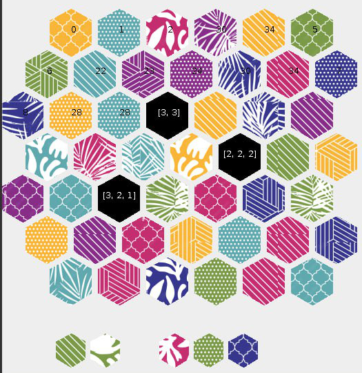
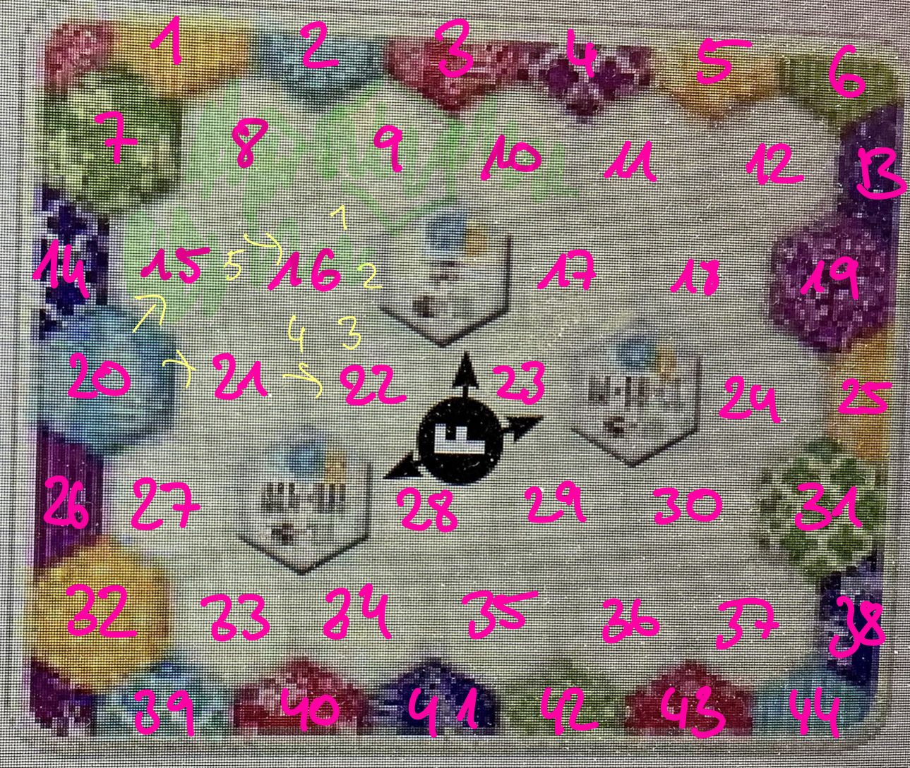

back
Projects
Katze1
Because I was not good enough at the board game "Calico" by the German game publisher Ravensburger,
I decided to write a bot in Java that would find the optimal moves.
It took me a few days to get from developing the first concepts to having all the parts running, with different
bots that follow different strategies. Although the weighting parameters slightly deviate from those
in the
game manual
(and I don't care enough to change them now) I believe my best bot
can compete with a good or very good human player (which I am not).
I am especially proud of the project architecture because i succeeded quite well in separating the components
(game logic, graphics, strategy) from each other and finding meaningful object-oriented abstractions.
Link


Mathematica Notebooks
Wolfram Mathematica is the programming language behind Wolfram Alpha. I started using it for my
master thesis on the dimensional reduction of a partial differential equation.
While I can highly recommend the use of a computer algebra system, I am not sure if I would
encourage anyone to particularly learn Mathematica. The syntax of the Wolfram language is a nightmare
and I am not a big fan of the official documentation.
One thing that can make Mathematica feel confusing is the special way in which it handles input.
Variables are not treated as objects with a type.
Instead, replacement rules reshape your expression in the background until no more rules apply.
People from functional programming might like Mathematica since it implements many of their concepts.
Anyway, here are two examples:
1. The RWTH canteens in Aachen offer you the opportunity to take food with you in a reusable box.
We did a maximum-likelihood estimation in order to find out how many of these boxes exist.
The input data is the number of times you get a box that you had borrowed before (they all carry a name tag for
identification).
Unfortunately, there are no comments in the code making it pretty useless.
2. When grading an exam it is nice to have a progress bar!
Labtime
You need to reconstruct your working hours based on your commits?
No problem with the labtime tool (in JavaScript)!
Hammer-Linear
This is for solving a certain type of puzzle in the game "Heroes of Hammerwatch" by the game developer
"crackshell" in Stockholm. Solving the puzzle is equivalent to transforming a
3x3 linear system, hence the name. The solver (in JavaScript).